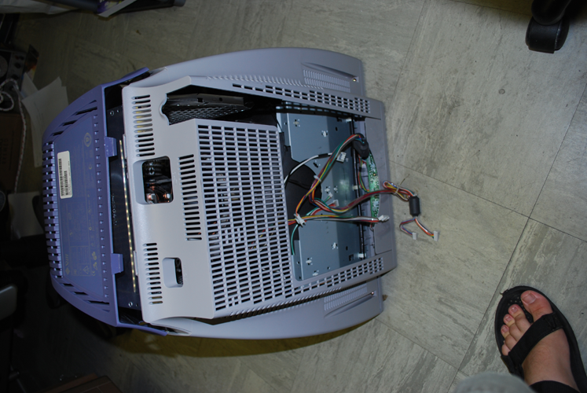
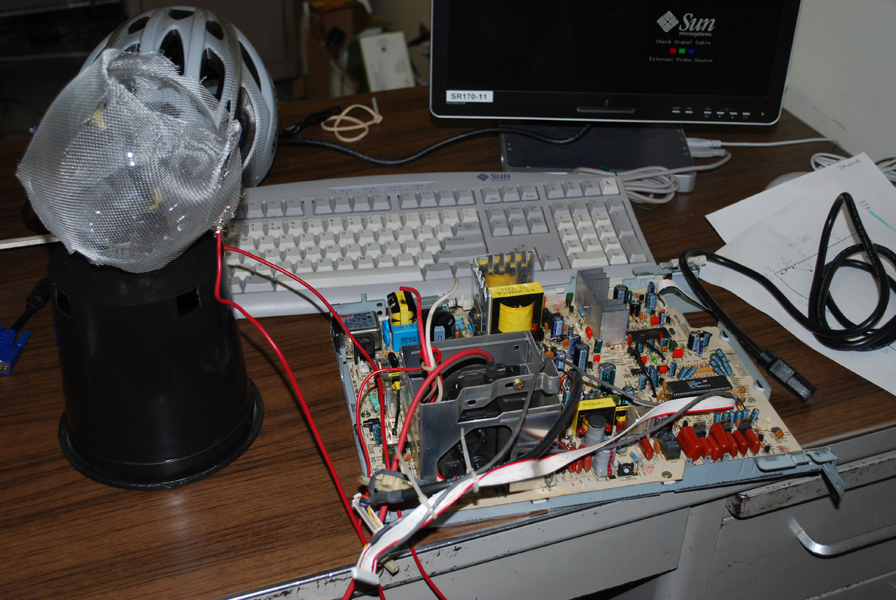

A Rubens Tube is a physics experiment which demonstrates that sound
waves are just pressure waves. Flammable gas is fed into a tube with small holes cut along the length. A speaker
is attached at one end. The sound waves from the speaker create regions of higher and lower pressure in the tube,
which alters the amount of gas available to the fire creating areas of higher and lower flame levels. The amplitude
of the effect is related to the amplitude of the sound wave, and by altering the frequency of the sound wave, one can
produce a standing wave effect. Below are some pictures/videos of the Rubens Tube Kirsten Larson, Ryan Swindle, and I
contructed.
A lightning globe is a pretty simple and cheap project. Although it is also relatively dangerous. A high voltage (more than 5k volts) is required. You can purchase special
high voltage power souces, however, to save money we simply took apart an old monitor which runs at over 10k volts and hacked the power source. The power is run through
a gas containing bulb. In our case, the bulb had a argon-nitrogen mix. The bulb is wrapped with aluminum screen (or some other conductive material), and then run to a ground.
The high potential differences lets the current arc across the gas and through the insulating glass bulb to the aluminum screen creating the lightning effect. Pictures are below.
 Monitor missing it's circuit board.
 Completed Apparatus
Lightning Show!
The excited argon-nitrogen mix creates that characteristic purple color.
A fresnel lens focuses light by using a series of separate sections in a frame. A conventional lens would use a single, large lens and therefore would
be significantly thicker, more expensive, and harder to build then a fresnel lens with similar magnification power. They are
commonly used in lighthouses and projection TV's which require cheap magnification and thinner lenses to be practical. We 'aquired' a 3' x 4' fresnel lens from
an abandoned large screen projection TV, and built a frame and rotating mount for it. By focusing the lens at the Sun, we were able to achieve temperatures of more than
1300 Kelvin (~1000 C or ~2000 F). The result is that we could melt copper-zinc pennies consistently, and occasionally melt the pre-1982 pure copper pennies (see below).
Fresnel lens design (left) vs a traditonal lens (right).